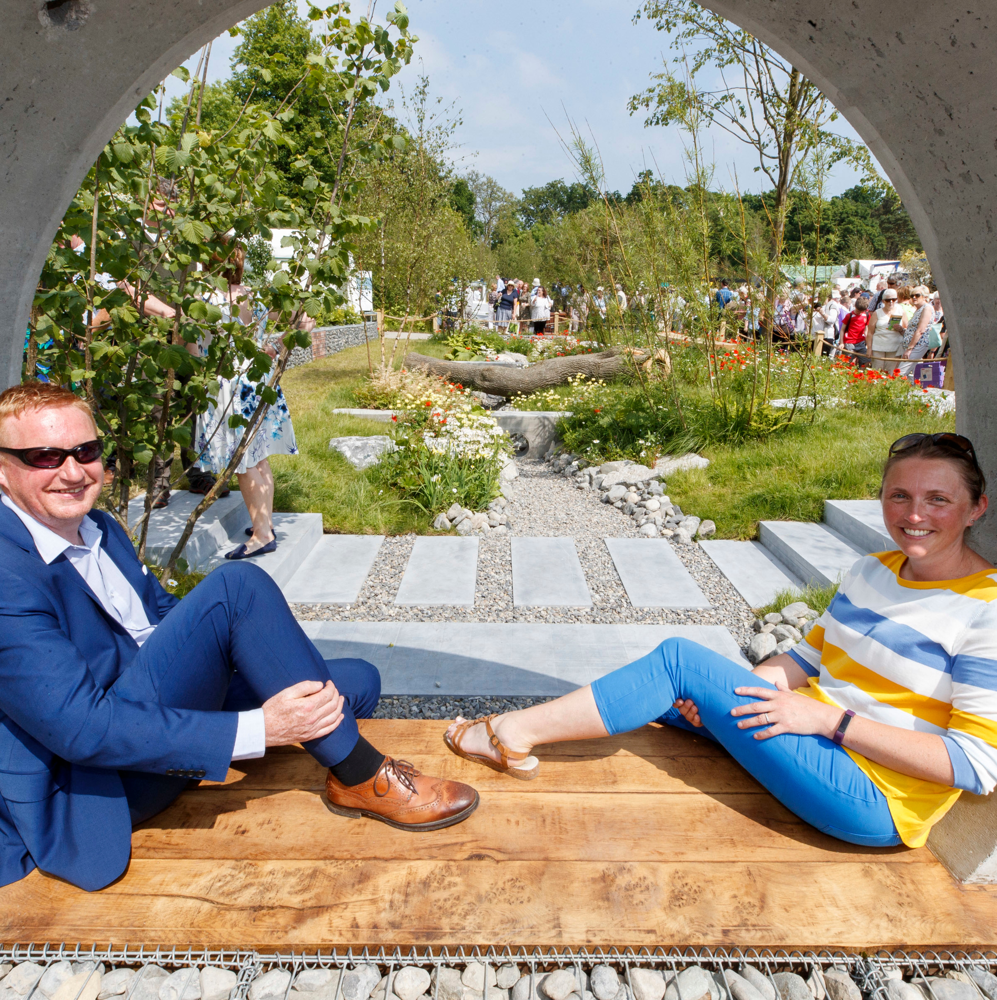

ciara walsh, student, itb
Which year are you in?
I am a second year student in BA Creative Digital Media.
Why did you choose this course?
I have an interest in photography and creating things from stories.
What are the aspects of the course you enjoy?
I can explore my creative side. Most of the lecturers and other students have the same interests as me, so there’s’ always plenty to discuss and discover. It’s good to work with people who share my interests. It makes working on projects that much more enjoyable.
How have you changed since you started this course?
I have matured and become more focussed on my goals. I want to complete my degree and am working hard. I have become more organised which is necessary if you are to complete projects on time. This course has opened my eyes to lots of opportunities that I could follow.
What profession would you like to be when you complete your course?
A photographer with their own printing business or a creative director. Basically, I would like to run a business myself, where I have creative freedom.
What do you like about the campus?
All the trees and landscape around the campus are beautiful. It makes the campus seem less crowded and its peaceful. Keeps me calm even when I feel really stressed as I can take a walk and feel relaxed.


